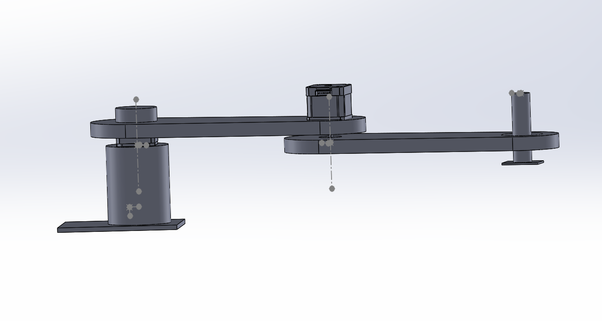
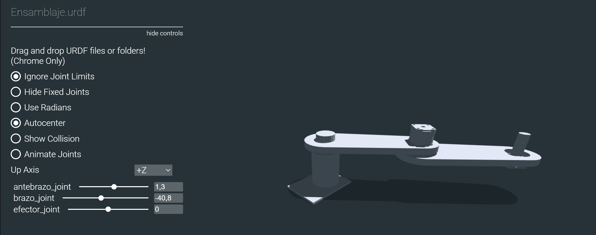

URDF
Prueba de actualizacion
Para crear archivos URDF en base a diseños personalidados de robots con solidworks, es necesario descargar la extensión URDF.
Extension-Solid, para versiones de SolidWorks superiores a la 2021. Seleccionar la opción: SolidWorks 2021
Una vez generado el archivo CAD con el que se va a trabajar, es necesario configurar el arbol de juntas y eslabones del robot usando la extensión de archivos URDF.

Esta extensión generará una carpeta con los documentos necesarios para la simulación el robot. Se puede visualizar la configuración obtenida utilizando la herramienta online viewer-urdf, para usarlo, se debe arrastrar la carpeta generada por SolidWorks en la pantalla de visualizador y esta generará una interfaz de manipulación rapida del modelo obtenido.

En el siguiente enlace Scara-URDF, se encuentra el modelo base que será utilizado para configurar el visualizador RVIZ2 de ROS2.
Visualización de archivos URDF
Para visualizar y manipular el archivo URDF creado se utiliza la herramienta RVIZ, a continuación se muestra los pasos para su configuración.
Instalar paquetes necesarios
sudo apt install ros-humble-joint-state-publisher-gui
Copiar archivos al paquete
Dentro del paquete mi_pkg_python, se debe crear los directorios: urdf/meshes y launch.
Directorio urdf: agregar el archivo urdf generado y dentro del subdirectorio meshes: colocar todos los archvos STL
Directorio launch: crear un archivo vacio
visualizar_rviz.launch.py
mi_pkg_python/
├── urdf/
│ ├── ensamblaje.urdf
│ └── meshes/
│ ├── base_link.STL
│ └── brazo_link.STL
│ └── antebrazo_link.STL
│ └── efector_link.STL
├── launch/
│ ├── visualizar_rviz.launch.py
nota: Es importante revisar la correcta escritura de los diferentes archivos.
Verifica y edita las rutas en el URDF
Dentro de ensamblaje.urdf, es necesario revisar que las rutas a las mallas estén definidas con prefijo package://, por ejemplo:
<mesh filename="package://mi_pkg_python/urdf/meshes/base_link.STL"/>
En este punto es necesario revisar que los parámetros
<limit lower="-1.57" upper="1.57" effort="1.0" velocity="1.0" />
Modificar
setup.pypara instalar los recursos
Dentro de setup.py, realizar la modificación del bloque data_files de la sigueinte forma:
data_files=[
('share/ament_index/resource_index/packages', ['resource/' + package_name]),
('share/' + package_name, ['package.xml']),
('share/' + package_name + '/urdf', ['urdf/ensamblaje.urdf']),
('share/' + package_name + '/urdf/meshes', [
'urdf/meshes/base_link.STL',
'urdf/meshes/brazo_link.STL',
'urdf/meshes/antebrazo_link.STL',
'urdf/meshes/efector_link.STL',
]),
('share/' + package_name + '/launch', ['launch/visualizar_rviz.launch.py']),
],
Crear el archivo de lanzamiento
Crea el archivo launch/visualizar_rviz.launch.py con el siguiente contenido:
# Importa la clase principal para definir lanzamientos en ROS 2
from launch import LaunchDescription
# Importa la acción Node para lanzar nodos ROS 2
from launch_ros.actions import Node
# Permite obtener la ruta del directorio share de un paquete instalado
from ament_index_python.packages import get_package_share_directory
# Módulo estándar para trabajar con rutas de archivos
import os
# Función principal requerida por ROS 2 para ejecutar este archivo de lanzamiento
def generate_launch_description():
# Construye la ruta completa del archivo URDF dentro del paquete
urdf_file = os.path.join(
get_package_share_directory('mi_pkg_python'), # Paquete que contiene el URDF
'urdf',
'ensamblaje.urdf'
)
# Devuelve la lista de nodos a lanzar
return LaunchDescription([
# Nodo que publica el URDF en el topic /robot_description
Node(
package='robot_state_publisher',
executable='robot_state_publisher',
name='robot_state_publisher',
parameters=[{'robot_description': open(urdf_file).read()}] # Carga el contenido del URDF
),
# Nodo que abre una interfaz gráfica con sliders para mover las juntas
Node(
package='joint_state_publisher_gui',
executable='joint_state_publisher_gui',
name='joint_state_publisher_gui',
output='screen'
),
# Nodo que lanza RViz2 para visualizar el robot
Node(
package='rviz2',
executable='rviz2',
name='rviz2',
output='screen'
)
])
¿Por qué se usan estos nodos?
robot_state_publisher: publica la descripción del robot (robot_description) para que RViz2 la use.joint_state_publisher_gui: permite mover las juntas manualmente mediante sliders.rviz2: lanza la visualización.
Compilar y lanzar
cd ~/ros2_ws
colcon build --packages-select mi_pkg_python
ros2 launch mi_pkg_python visualizar_rviz.launch.py